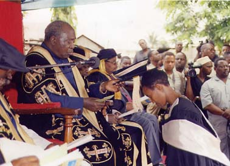

Supporting education and training in Africa
A Lifeline for Women
Since DAAT began its sponsorship programme for women at the Open University of Tanzania in 1997, eight women have completed their degrees with financial support from DAAT, including:-
Janeth Chilewa was awaiting graduation with an LLB when she died early in 2004.
- Kezia Mkwizu graduated in 2005 with a Bcom (Ed) (Hons) while working as a manager in the airfreight business, and is now planning to do a Master’s in International Business.
- Caroline Sobayi, a widowed secondary school teacher with one son, finished her BSc. Ed. in 2007.
- Thecla Msemwa, a teacher at Kisutu Girls' Secondary School, completed her BA with Education in 2000.
The first of DAAT's sponsored students to be awarded her degree, she completed her studies in five years instead of the usual six.
She wrote last year to tell us that she has since completed a Master’s in Education at the University of Dar Es Salaam, is teaching Englsih literature at Tambaza High School, and has started writing a proposal for doctoral studies.
- Gaudencia Kimori graduated in 2001 at the age of 49 with a BA with Education.
- Irene Tarimo became the first student at OUT to be awarded a First Class degree when she graduated with a BSC with Education in March 2003.
Irene is a teacher at Weruweru Girls' secondary school in Kilimanjaro region.
- Rehema Mningo, a school inspector and mother-of-three from Songea, completed her BA with Education in March 2003.
- Justina Niragire has inspired two of her colleagues at Bwiru Girls' Secondary School in Mwanza region to enrol for degree courses at OUT. Justina was awarded her BA with Education in September 2003. She wrote in 2006 to say that she was working towards a Diploma in Special Education, after which she expected to enrol for a Master’s in the same subject. She had started a women’s loan group to help herself and others like her to pay her college fees.

Justina Niragire receiving her degree in September 2003
Justina Niragire receiving her degree in September 2003
By gaining a teaching qualification, these women are able not only to enhance their own careers, but to help improve the standard of education in their schools and to raise the status of women's education in Tanzania.
OUT's distance learning system enables women such as Thecla, Gaudencia, Irene, Rehema and Justina to combine a university education with a full-time job and family commitments.
It is also a cost-effective: just £15 per month pays for the tuition fees and books for one student. To support a student, please print out a donation form and send with your donation to the Fund Administrator.